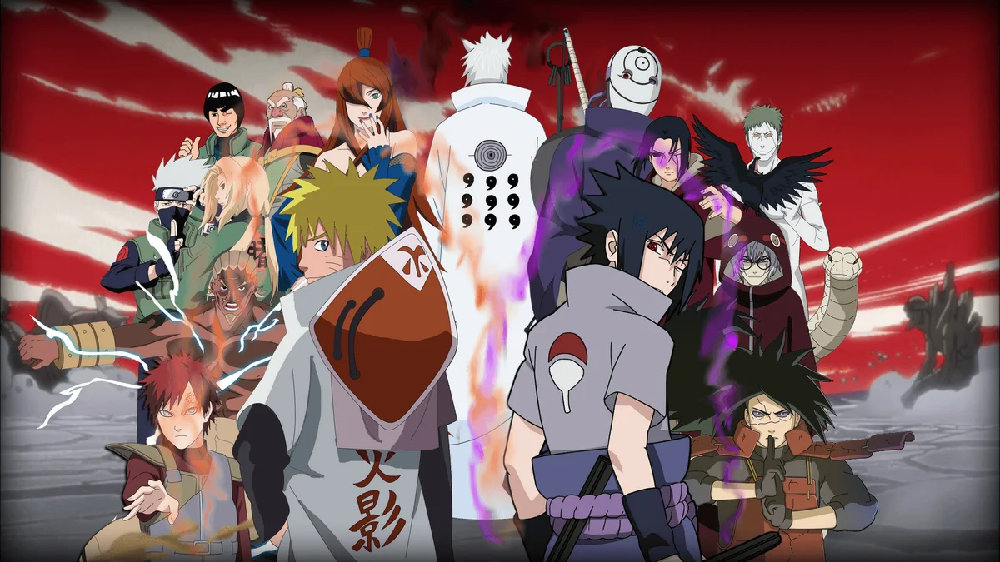

Вселенная Наруто
Скорее всего Вы уже знакомы с происходящими действиями аниме-сериала, но всё же мы решили написать эту статью с описанием Наруто. Что ж, давайте рассмотрим этот мир поближе. Все действия происходят в мифическом мире. По сюжету, Наруто Удзумаки главный герой. Он носитель девятихвостого демона-лиса, который находиться внутри него. Вернёмся на 12 лет ранее. На деревню Наруто, "Скрытую Листву" (Коноха), напал демон лис, и для того чтобы спасти родную землю, глава Конохи жертвует своей жизнью. Он запечатывает дух демона в тело своего сына Наруто. Отец Наруто, четвёртый хокагэ, хотел, чтобы его сына считали героем, так как он всю мощь девятихвостого лиса сдерживал в себе. Но восприняв Наруто как демона во плоти, население деревни возненавидело его. Своё отличие от других людей, герой узнал лишь спустя несколько лет.